15-minute folder wildcard test
Optimized native Linux GUI on d30edf0. Six reproduced findings: one P1, four P2, one P3. No application code changed.
{
"testedCommit": "d30edf0167f72d8837cabc98cb629272f6e781b1",
"started": "2026-10-26T12:33:58.678798+00:00",
"ended": "2026-10-26T12:49:00.832899+00:00",
"durationSeconds": 902.1541856150143,
"repeatedFilterCycles": 370,
"initialPatternCases": 29,
"rapidChangeChecks": 20,
"failedChecks": [],
"findingCount": 6,
"priorities": {
"P2": 4,
"P1": 1,
"P3": 1
}
}
Covered name/path globs, *, ?, classes, brace alternatives, multi-pattern lists, Unicode, case, includes/excludes, Enter/debounce/Escape, status and flat filters, Git tree shortcuts, archives, copy scope, filesystem changes and 3,500-file performance. Backend comparisons reported 4–23 ms for the sampled large-tree patterns; GUI interaction/settling took about 0.10–0.25 s. Twenty rapid-change checks ended correctly. No significant performance bottleneck or crash was observed in this fixture; this is not a claim about larger trees.
| ID | Priority | Finding |
|---|
| W03 | P1 | Filtered archive copy overwrites hidden entries behind a one-file confirmation |
| W01 | P2 | GUI pattern splitting breaks advertised brace alternatives |
| W02 | P2 | Question-mark matching and case folding are byte/ASCII based for Unicode names |
| W04 | P2 | Copying a filtered parent skips visible matching files inside nested archives |
| W06 | P2 | Filesystem refresh inserts nonmatching files into an active wildcard filter |
| W05 | P3 | No-match filters leave identical Git folders visible in hierarchy view |
W03 · P1 · Filtered archive copy overwrites hidden entries behind a one-file confirmation
- Compare archive-warning/left and archive-warning/right; set *.txt. Both bundle.zip files contain keep.txt and a different hidden.bin.
- Select the bundle.zip container and choose Copy right. The native confirmation says Copying replaces 1 file and lists bundle.zip/keep.txt.
- Confirm and inspect the right ZIP with Python zipfile.
Observed
The right hidden.bin is replaced by the left hidden.bin, although it was hidden and absent from the one-file replacement confirmation. A control copying an ordinary filtered directory preserves its hidden .bin.
Cause
The comparison opens archives to find matching children, and the confirmation counts only filtered descendants. ops::copy takes the local archive fast path and copies the entire container as a raw file.
Fix and regression direction
Use one operation plan for preview/confirmation/execution. Either merge only the selected matching entries while preserving unrelated destination entries, or explicitly present and confirm whole-archive replacement including hidden content. Do not promise one child replacement and execute a raw container overwrite. Test include and exclude filters, ZIP/nested archives and normal-folder controls.
Related to #9/R03, but the normal filtered-directory copy passes here. This is the archive-container path on latest main; it is distinct from #12/H04 stale archive caching.
Source: app/src/lib/FolderView.svelte:579, crates/parallax-core/src/ops.rs:41, crates/parallax-core/src/ops.rs:158
15-archive-copy-warning-native.png
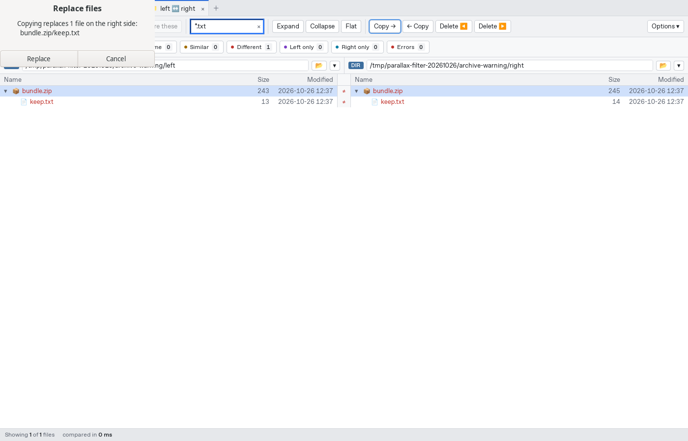
16-archive-warning-after.png
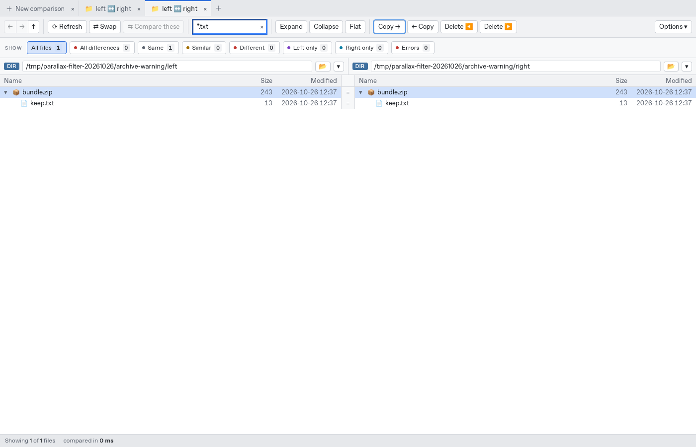
W01 · P2 · GUI pattern splitting breaks advertised brace alternatives
- Compare patterns/left and patterns/right; enter *.{java,kt} in the filename filter.
- Under Options, try the exclude pattern *.{txt,rs}. Compare with the working include list *.java *.kt.
Observed
Both brace expressions fail with unclosed alternate group. The include is split into *.{java and kt}; the exclude is similarly split at its comma. Passing ["*.{java,kt}"] directly to the production run_compare command succeeds and finds 3 files.
Cause
applyPatterns splits on every space, comma and semicolon; applyExcludes splits every comma. Neither tokenizer respects brace groups or character classes.
Fix and regression direction
Use a shared glob-aware list tokenizer that preserves separators inside groups/classes, and define quoting/escaping for literal separators. Regressions: brace alternatives, nested groups/classes, normal multi-pattern lists, invalid syntax recovery, Enter/debounce/Escape.
Related UX limitation: literal filenames containing spaces, commas or semicolons cannot be entered exactly; quotes/backslash-space do not provide a working escape. Direct backend patterns for those exact filenames work. The help explicitly advertises brace alternatives.
Source: app/src/lib/FolderView.svelte:265, app/src/lib/FolderView.svelte:348
02-pattern-09.png
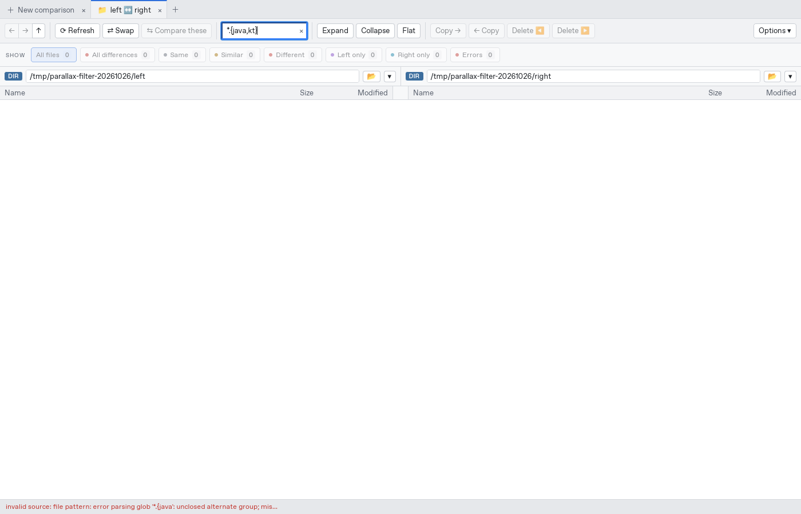
13-exclude-brace-error.png
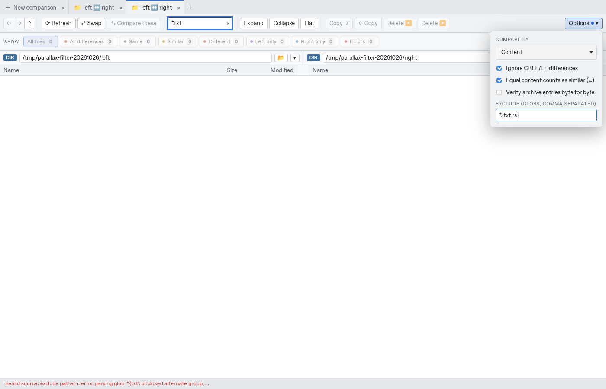
41-brace-workaround.png
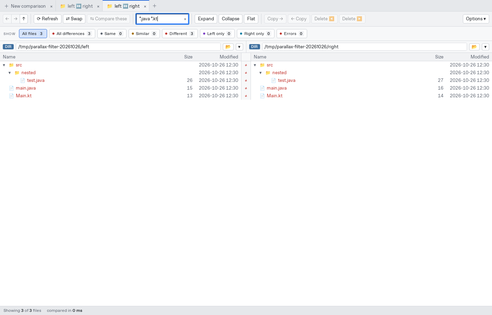
W02 · P2 · Question-mark matching and case folding are byte/ASCII based for Unicode names
- Include files a.txt, é.txt, 中.txt, 😀.txt and Ä.TXT. Apply ?.txt, ??.txt, ???.txt and ????.txt.
- Try ä.txt against Ä.TXT; compare with the working exact pattern Ä.txt.
Observed
The single ? excludes é/中/😀/Ä. Two ? match é/Ä, three match 中, and four match 😀, following UTF-8 byte lengths. ä.txt finds nothing while Ä.txt finds the file. ASCII extension case folding works.
Cause
Includes uses globset byte-oriented matching and ASCII case folding. The tooltip promises one character and case does not matter without explaining this restriction.
Fix and regression direction
Choose Unicode scalar/case-fold semantics for displayed UTF-8 filenames, with an explicit policy for undecodable paths, or accurately restrict/document the contract. Regressions must cover accented letters, CJK, emoji, mixed extension case and Unicode case pairs.
Source: crates/parallax-core/src/compare.rs:150, app/src/lib/FolderView.svelte:893
40-unicode-1.png
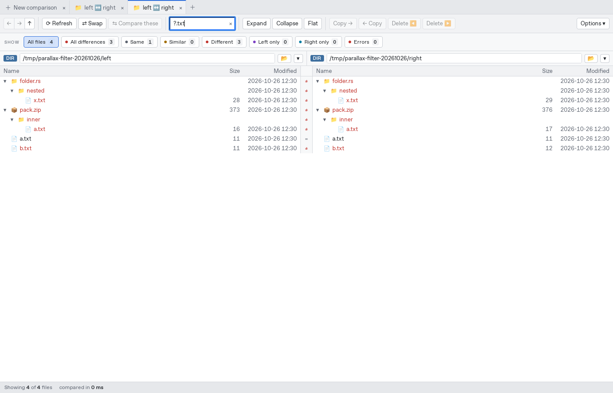
40-unicode-2.png
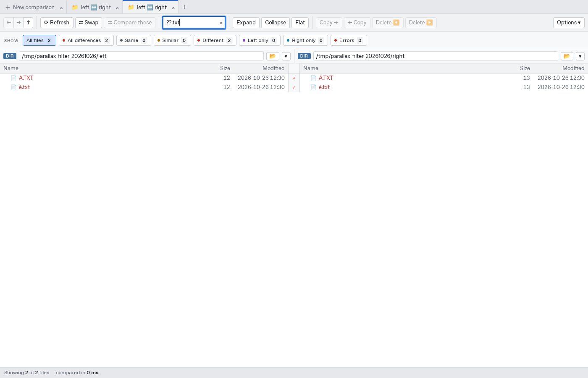
40-unicode-4.png
W04 · P2 · Copying a filtered parent skips visible matching files inside nested archives
- Compare nested-copy/left and nested-copy/right and enter *.txt. Expand wrapper/bundle.zip; keep.txt and wrapper/normal.txt are visible differences.
- Select wrapper and Copy right; confirm the replacement and inspect the result.
Observed
normal.txt is copied, but bundle.zip/keep.txt retains the right-hand content and remains Different. The selected visible archive descendant was silently skipped.
Cause
Filter::keeps admits ordinary directories but an Archive entry only if the archive name/path itself matches. The comparison walks archive containers even when only their children match, so recursive copy traverses a different set of entries.
Fix and regression direction
Share the comparison and copy traversal/selection semantics, including filtered archive descendants. Resolve this alongside W03: simply admitting whole archives would overwrite hidden entries. Verify all visible selected descendants are copied and unrelated hidden entries survive.
Source: crates/parallax-core/src/compare.rs:246, crates/parallax-core/src/compare.rs:527, crates/parallax-core/src/ops.rs:166
22-nested-archive-before.png
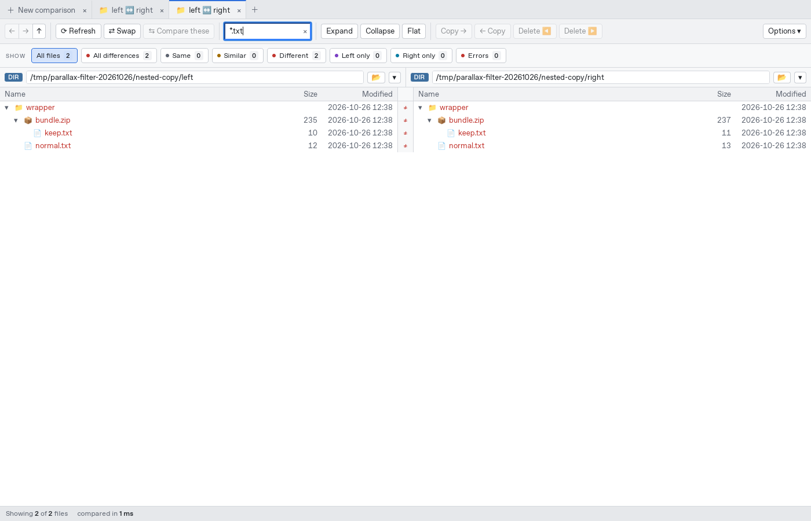
23-nested-archive-after.png
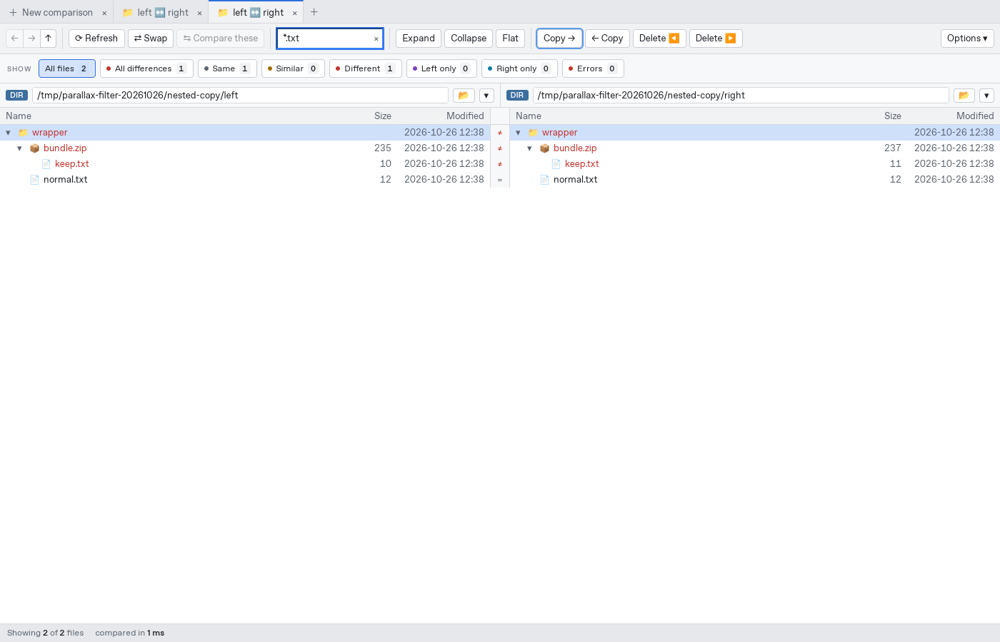
W06 · P2 · Filesystem refresh inserts nonmatching files into an active wildcard filter
- Compare live/left and live/right with keep.txt and existing.bin; apply *.txt so only keep.txt is visible.
- Externally modify left/existing.bin and create left/new.bin. Wait for the watcher.
- Click Refresh without changing the pattern.
Observed
The unchanged *.txt view grows from 1 to 3 files, showing both .bin files. Full Refresh restores the correct single .txt row. Both existing hidden and newly created nonmatching files leak into the view.
Cause
refreshTarget picks the changed path, refresh_paths calls compare_path on it as a root, and root-file comparison does not apply the include predicate. replaceNode inserts the returned node without checking the current filter.
Fix and regression direction
Apply the same includes/excludes and ancestor coverage rules to incremental refresh as to full traversal, returning null for a nonmatching leaf and pruning empty parents. Test existing/new hidden files, matching files, nested paths, ancestor-matching globs, flat/status filters and pattern changes during pending refresh.
Source: app/src/lib/FolderView.svelte:641, app/src/lib/tree.ts:196, app/src-tauri/src/commands.rs:674, app/src-tauri/src/commands.rs:565
50-live-filter-before.png
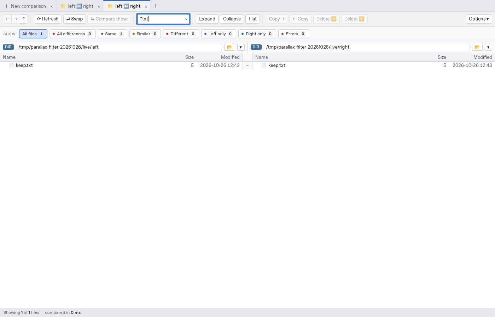
51-live-filter-leaked-files.png
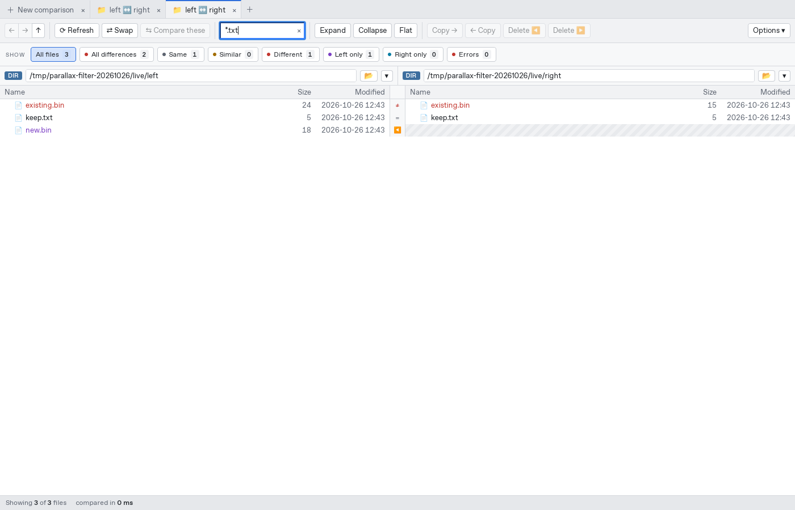
52-live-filter-refresh-restores.png
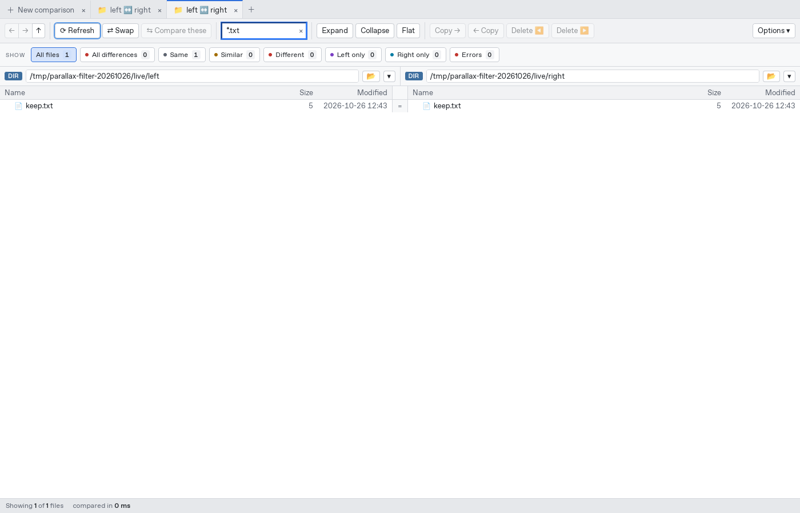
W05 · P3 · No-match filters leave identical Git folders visible in hierarchy view
- Compare git@base and git@same from the portable fixture. Both have an identical sub/inner.txt subtree.
- Enter missing*.txt, then Expand and switch to Flat.
Observed
Hierarchy view keeps sub as an empty Same folder while All files is 0. Expanding leaves it visible; Flat correctly shows no rows. The filter help says folders without matching files are left out.
Cause
The Git quick-ID shortcut returns an unexpanded node before testing the include filter. Empty-container pruning deliberately keeps unexpanded nodes, and expanding later does not prune the parent row.
Fix and regression direction
Make lazy identical-subtree handling filter-aware and prune known-empty containers after expansion/refresh, while preserving the Git tree-ID performance benefit. Test no-match and selective matching filters in hierarchy, Expand and Flat.
Source: crates/parallax-core/src/compare.rs:457, crates/parallax-core/src/compare.rs:565, app/src/lib/tree.ts:148
20-git-filter-no-matches.png
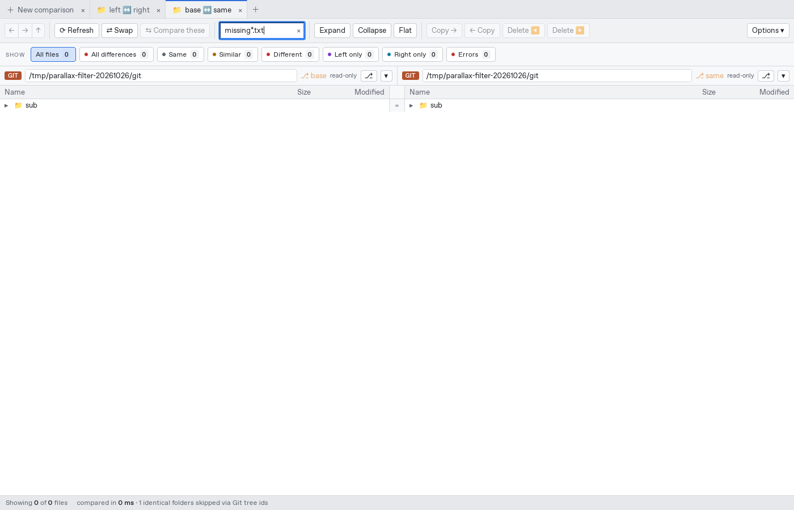
21-git-filter-expanded.png
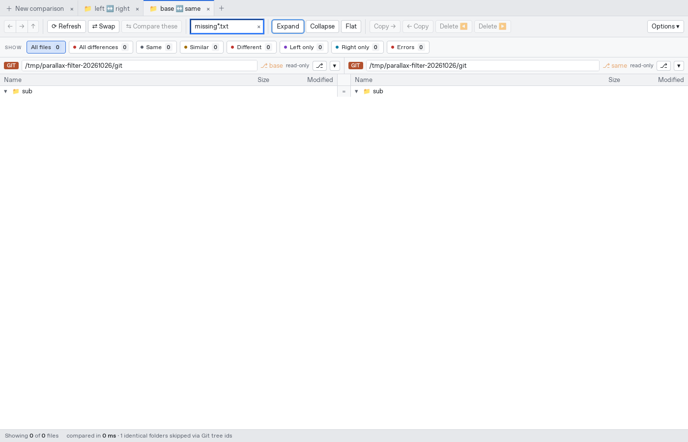
Additional UX note: include matching ignores ASCII case but exclude matching is case-sensitive. This was recorded as a semantic inconsistency to clarify, not counted as a separate correctness defect. Invalid pattern recovery and normal filtered directory copying passed. One corrected harness selector for the uppercase Exclude label is retained in local logs and excluded from findings.